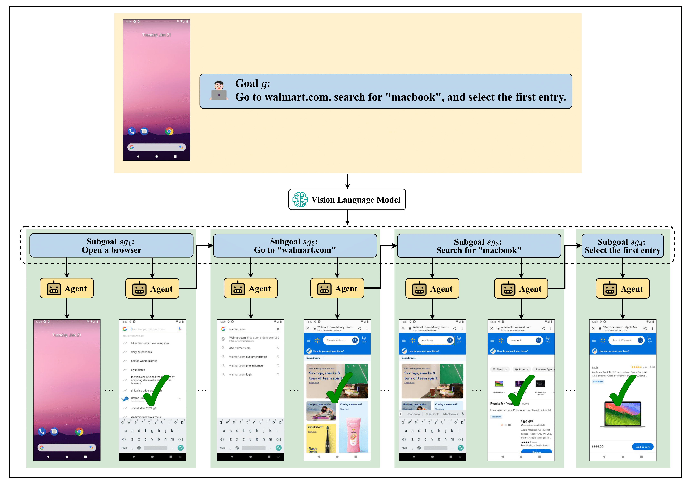

Qualitative example of VSC-RL on the Web Shopping task:

State-of-the-art (SOTA) reinforcement learning (RL) methods enable the vision-language agents to learn from interactions with the environment without human supervision. However, they struggle with learning inefficiencies in tackling real-world complex sequential decision-making tasks, especially with sparse reward signals and long-horizon dependencies. To effectively address the issue, we introduce Variational Subgoal-Conditioned RL (VSC-RL), which reformulates the vision-language sequential decision-making task as a variational goal-conditioned RL problem, allowing us to leverage advanced optimization methods to enhance learning efficiency. Specifically, VSC-RL optimizes the SubGoal Evidence Lower BOund (SGC-ELBO), which consists of (a) maximizing the subgoal-conditioned return via RL and (b) minimizing the subgoal-conditioned difference with the reference policy. We theoretically demonstrate that SGC-ELBO is equivalent to the original optimization objective, ensuring improved learning efficiency without sacrificing performance guarantees. Additionally, for real-world complex decision-making tasks, VSC-RL leverages the vision-language model to autonomously decompose the goal into feasible subgoals, enabling efficient learning. Across various benchmarks, including challenging real-world mobile device control tasks, VSC-RL significantly outperforms the SOTA vision-language agents, achieving superior performance and remarkable improvement in learning efficiency.
The SGC-ELBO is derived by decomposing the original goal-conditioned problem into smaller subgoal-conditioned tasks:
SGC-ELBO(π, πref, sgi, g) = Eτi ~ pπ(τi|sgi) [log p(O|τi, sgi)] - KL(pπ(τi|sgi) || pπref(τi|g))
where the first term maximizes the likelihood of observing outcomes \(O\) given the subgoal \(sg_i\), and the second term minimizes the Kullback-Leibler divergence (KL-divergence) between the policy \( \pi \) and the reference policy \( \pi_{\text{ref}} \), ensuring that the learned policy aligns with the reference policy while effectively solving the subgoal.

We employ Vision-Language Models (VLMs) to autonomously generate subgoals. Given a high-level goal \(g\), the VLM generates a set of feasible subgoals \( \{ sg_i \}_{i=1}^N \) that break down the task into simpler, achievable steps. The optimization objective for VSC-RL, using a VLM as the subgoal generator, can be written as:
max π [ ∑i=1N VLM(g) [SGC-ELBO(π, πref, sgi, g)]]
In this optimization, we maximize the sum of SGC-ELBO values for all generated subgoals. This process ensures that the agent not only learns to perform tasks efficiently but also generalizes across various complex decision-making problems.
| Task | Task Split | Set-of-Marks | AppAgent | CogAgent | AutoUI | Filtered BC | DigiRL | VSC-RL (ours) |
|---|---|---|---|---|---|---|---|---|
| General | Train | 32.3% | 14.6% | 25.0% | 12.5% | 53.9% | 64.9% | 73.9% |
| Test | 16.7% | 16.7% | 25.0% | 14.6% | 62.5% | 67.7% | 72.9% | |
| Web Shopping | Train | 6.3% | 5.2% | 31.3% | 14.6% | 53.6% | 55.3% | 64.0% |
| Test | 11.5% | 8.3% | 38.5% | 17.7% | 54.2% | 41.3% | 59.0% |
@article{wu2025vsc,
title={VSC-RL: Advancing Autonomous Vision-Language Agents with Variational Subgoal-Conditioned Reinforcement Learning},
author={Wu, Qingyuan and Liu, Jianheng and Hao, Jianye and Wang, Jun and Shao, Kun},
journal={arXiv preprint arXiv:2502.07949},
year={2025}
}